Safe ... Or Sorry? Look-Alikes In Nature
Here’s how to distinguish some of nature’s harmless and potentially harmful look-alikes.
By Terry Krautwurst
June/July 2007
The trail I was hiking skirted a popular picnic area, and as I passed a family having lunch the mother suddenly shrieked: “Sara! Get down from that fence! It’s covered with poison ivy!” The little girl, about 5 years old, leapt to the ground and stared at the accused leafy monster, her eyes wide with alarm.
I winced. Clearly the vine curling over the fence wasn’t poison ivy, but Virginia creeper, a somewhat similar-looking - and entirely harmless - plant. A case of mistaken identity had needlessly frightened the youngster and sullied a carefree family outing. Ironically, as I glanced at the scene again, the mother was standing, open-sandaled, in a patch of actual poison ivy.
There are many look-alikes in nature, and while most pose little urgency, it’s important to know how to tell hazardous flora and fauna from similar-looking safe species. In most cases, the knowledge simply allows you to enjoy the outdoors more fully, without worry; in others, it can make the difference between safety and personal risk.
Bees & Wasps vs. Flower Flies
Bzzzzt! Watch out for that fuzzy, yellow-and-black striped ... fly? A variety of harmless insects fool bug-gobbling predators by wearing the same watch-out-I-sting gang colors as bees or wasps. The most common are syrphid (or flower) flies, a large family of imposters that are startlingly convincing. But the truth is, they don’t have stingers and couldn’t hurt a ... well, you know.
Many syrphids buzz just like their ouch-instigating counterparts, and can be alarmingly bold. The yellowjacket hover fly has a habit of buzzing up to a person and hovering there for a moment, as if to say, “Boo!” At least a dozen other flower flies resemble yellowjackets, while many others mimic honeybees, bumblebees, carpenter bees and all manner of wasps.
Syrphid flies are important pollinators, and the larvae of many species are voracious predators of plant-sucking aphids. The next time a beelike insect buzzes at you, don’t be too quick to hit the panic button.
Bee or Wasp | |
Four wings | |
At rest, wings folded over back | |
Waist distinctly pinched (wasp only) | |
Antennae longer than head | |
Flight: straight, smooth, point-to-point; poor hoverers |
Poison Ivy vs. Look-alikes
They are the terrible trio of American flora: poison sumac, oak and ivy. Fortunately, the former is limited to swampy terrain in the East and Midwest. And though poison oak is common along the West Coast and in sandy soils in the lower East and Midwest, its oaklike leaves and typically shrublike posture are comparatively easy to spot.
Poison ivy, though, hides. It’s not just the mosquito of the botanic world; it’s the chameleon. It can be a vine, a shrub or treelike. It creeps, climbs and stands on its own. Its leaves can be green, yellow or red; oval or lance-shaped; toothed, lobed or smooth-edged; light or dark; shiny or dull. Botanists can’t even agree on how many poison ivy species exist. Most agree there are two main kinds of poison ivy; the eastern type tends to climb as a vine and the western tends to be shrubby - but neither is consistent. Plus, the plant often grows near and intermingles with look-alikes. We’ve all heard the old saw, “Leaves of three, leave it be,” and poison ivy does indeed bear leaves in groups of three. But so do many innocent plants, such as wild strawberry, jack-in-the-pulpit, blackberry, raspberry, box elder and hog-peanut. You’d have to stay home to steer clear of them all.
Other plants only vaguely resemble poison ivy, but share similar growth habits. Virginia creeper has five leaves, not three, and those leaves are distinctly toothed, while poison ivy’s are not. But like poison ivy, its spring greenery is triangular and glossy; it climbs fences and trees as a twining vine, and in the fall its foliage changes from green to scarlet. How, then, can you avoid poison ivy? First, learn to recognize the plant in all its forms. But beyond that, keep a wary eye out not only for the plant itself, but also for signs that it may be hiding nearby (see list, below).
Where Poison Ivy May Lurk |
Sunny areas in open woods and along trails and field edges |
Presence of common companion plants: Virginia creeper, jewelweed, hog-peanut |
Venomous or Not?
In the United States, there are two groups of venomous snakes: pit vipers, which include rattlesnakes, copperheads and cottonmouths, and coral snakes, which are comparatively rare.
Pit vipers get their name from the tiny, heat-sensing (and thus prey-detecting) pit located on each side of the head, between the eye and nostril. Obviously, if you see a snake with rattles you know it’s venomous. This makes identifying a dangerous snake easier in the West, where rattlesnakes are the only pit vipers. (Keep in mind, however, that rattlesnakes can lose their rattles.)
In the eastern United States, rattle-less cottonmouths and copperheads complicate matters. Both bear markings similar to those of many harmless species. To distinguish a pit viper from a look-alike, look (from a distance, ideally using binoculars) for the telltale distinctions listed below. Snakes with large bodies and distinct patterns, such as rat snakes, corn snakes and hog-nosed, are easily misidentified. It’s especially easy to mistake water snakes for a copperhead or cottonmouth; they share physical features and similar habitat.
With copperheads, look at the snake’s pattern. Its hourglass-shaped crossbands are narrow in the center of the back and wide along the sides. On water snakes, they’re the opposite - fattest along the snake’s center and narrow at the sides.
Cottonmouths vary in color from solid brown, black or olive, to patterns of these colors. Body language and behavior can be more important clues for distinguishing them from water snakes. On land, cottonmouths are poor climbers and are more likely to form a tight circular coil on a stump or log just above water level. Water snakes usually hang draped over a branch in a tree or bush. In the water, a cottonmouth swims with its head held well above the water’s surface; water snakes swim totally immersed.
Habitat and range are critical, common-sense considerations, too. Cottonmouths, for instance, inhabit only the South and lower Midwest. Even if you live in one of those regions, you can rest a little easier if you’re well away from the watery habitat they favor. A good field guide will tell you which snakes actually live in your area, and the kinds of places they tend to call home.
Vertical pupil | Round pupil |
Compared to pit vipers, coral snakes are relatively small - usually no more than 2 feet long - and mild-mannered. They spend most of their time underground or beneath forest litter, and their primary prey is other snakes. But when coral snakes do bite, they pack a dangerous punch. Members of the same deadly family as cobras, their venom is exceedingly potent.
Fortunately, a coral snake’s bright bands of yellow, red and black make it easy to spot. But you might be looking at one of its harmless near-twins, the scarlet snake and scarlet kingsnake, both of which occupy part of the coral’s southern coastal range, from North Carolina to east Texas.
A simple saying to help tell the snakes apart is, “Red touch yellow, kills a fellow; red touch black, safe for Jack.” The rule of thumb applies for both U.S. species, the eastern coral snake and the Sonoran (or western) coral snake. It’s not always reliable for similar snakes south of the border, though. And in the Sonoran coral’s range, south-central Arizona to southwestern New Mexico, nonvenomous shovel-nosed snakes wear adjacent red and yellow bands, too.
Scientists aren’t sure whether the scarlets are mimicking the coral, or the other way around. For years they thought the impostors had adapted the coral’s colorful bands as a survival strategy. Predators that learned the hard way to avoid coral snakes would avoid them, too. But wait a minute: a coral snake’s bite is not a learning experience. Almost invariably, the victim dies. Perhaps, instead, the coral snake has taken on the harmless snakes’ color as a sort of sheep’s clothing.
For safety’s sake, steer clear of all brightly banded species wherever corals roam.
Coral or Scarlet Snake? |
Grizzly vs. Black Bears
In the West, where black and grizzly bears share habitat, knowing one from the other is serious business. Black bears have evolved a flight response to danger. But grizzlies are programmed to fight - offense is their defense. In a surprise encounter with a black bear, most experts advise to stand your ground and, if necessary, shout and wave your arms to scare it away. But if it’s a grizzly, they suggest, that behavior might provoke an attack. Instead act nonthreatening. Avoid eye contact and back away slowly.
But figuring out which bear you’re dealing with can be difficult. Coat color isn’t a reliable distinction, because some grizzlies can have near-black fur, and many western black bears wear brownish fur akin to that of lighter-colored grizzlies. There are distinctive differences between the two species, but no one feature is defining. You have to put together all the clues (see the list below) to reach a reasonable conclusion.
Experts advise looking at the head first - the relative size of ears, the facial profile, the shape. Remember, too, that the safest strategy is to avoid bears, period. Like all wild animals, black bears and grizzly bears are unpredictable. They also are big, fast, strong and armed - tooth and claw. When it comes to bears, consider them all members of a single species: Respectimus maximus.
Proportionately longer ears | |
Straight facial profile | |
Familiarity Is the Key
Knowing what to look for - and what not to worry about - is the key to distinguishing safe from potentially harmful species. Studying field guides is a great way to familiarize yourself with the safe-or-sorry plants and insects in your area. Nature centers and zoos offer you an opportunity to get to know animals such as snakes and bears safely. But ultimately, of course, the best teacher of all is experience in the outdoors. The more time you spend outside and the more familiar you become with the flora and fauna around you, the more you can enjoy the natural world.
|
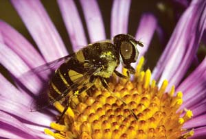 DWIGHT KUHN The flower fly can often be mistaken for a bee or wasp. |
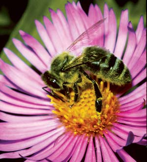 DWIGHT KUHN One way to distinguish honeybees from look-alikes is to look at their antennae, which, for honeybees, are longer than their heads. |
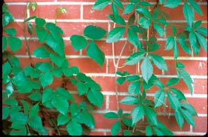 DAVID CAVAGNARO Poison ivy (left) and Virginia creeper (right) are commonly confused for one another. |
|
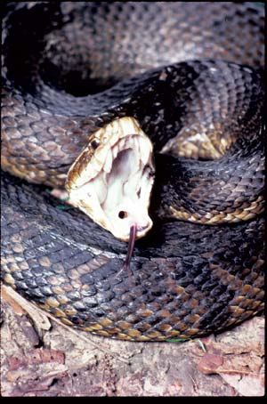 MASLOWSKI PRODUCTIONS Cottonmouths vary in color from solid brown, black or olive, to patterns of these colors. They inhabit the South and lower Midwest. |
 DWIGHT KUHN Pit vipers (which includes the rattlesnake, shown here, and the copperhead and cottonmouth) are so named for their distinguishing facial pits. Located between their eyes and nostrils, these pits sense heat and help the snakes detect prey. |
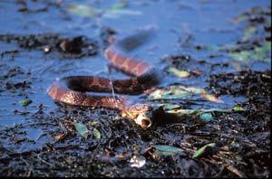 RICHARD DAY/DAYBREAK IMAGERY Northern water snake |
|
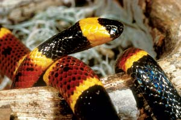 KENT/ANIMALS ANIMALS The small and relatively mild-mannered eastern coral snake packs a potent bite, one that's potentially deadly to humans. It can be distinguished from nonvenomous look-alikes through which colors touch each other: "red touch yellow, kills a fellow." |
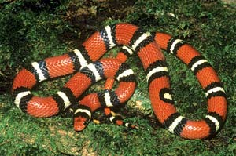 SHELDON/ANIMALS ANIMALS The nonvenomous scarlet kingsnake lives in part of the venomous coral snake's range, from North Carolina to east Texas. |
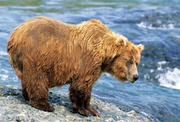 BILL LEA The grizzly bear has a more pronounced shoulder hump than the black bear. |
|
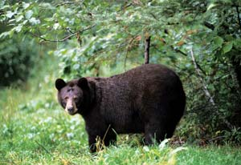 BILL LEA One distinguishing feature of the black bear is how its body tends to tilt upward, whereas the grizzly bear tends to slope downward. |
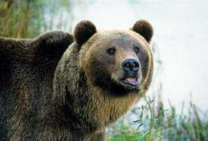 BILL LEA Note the short ears of the grizzly bear, compared to the comparatively larger ears of the black bear. |
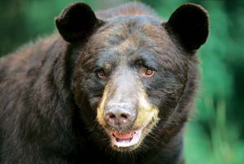 BILL LEA The black bear has a more oval face than the rounded face of the grizzly bear. |